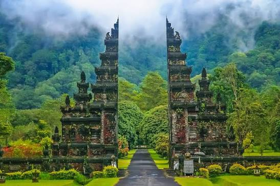
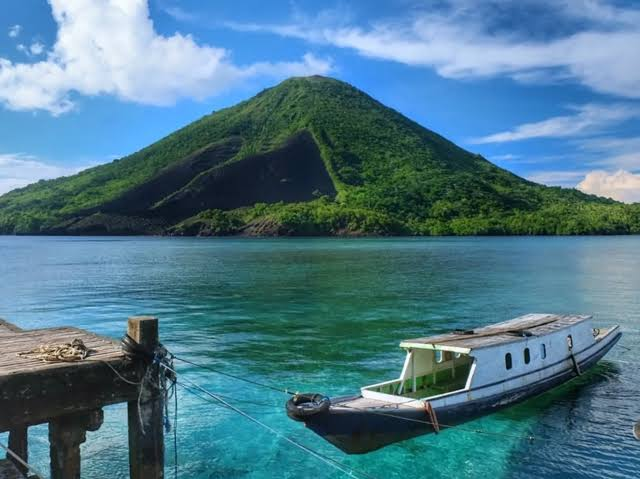

Destinasi Bulan Ini: Bali

Bali, Pulau Dewata, menawarkan lebih dari sekadar pantai. Temukan ketenangan di Ubud,
pelajari tarian tradisional, dan nikmati kuliner lokal. Rasakan harmoni antara manusia,
alam, dan budaya. Dapatkan panduan wisata lengkap dan penawaran eksklusif untuk perjalanan
Anda.
Destinasi Impian: Banda Neira

Banda Neira, kepingan surga di Maluku Tengah, menawarkan perpaduan memukau antara kekayaan
sejarah dan pesona alam. Jelajahi benteng-benteng kolonial yang megah, nikmati keindahan taman
laut yang eksotis, dan saksikan kemegahan Gunung Api Banda dari kejauhan. Tempat yang pernah
menjadi pusat rempah-rempah dunia ini adalah destinasi wajib bagi pecinta wisata bahari dan
sejarah.